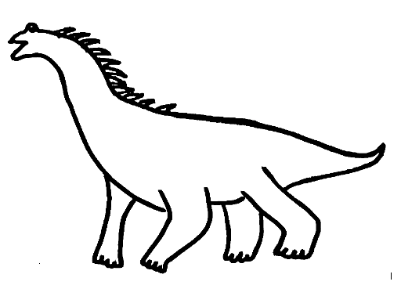
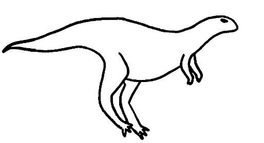
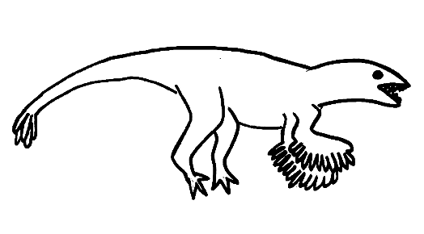
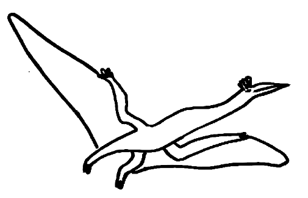
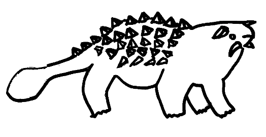
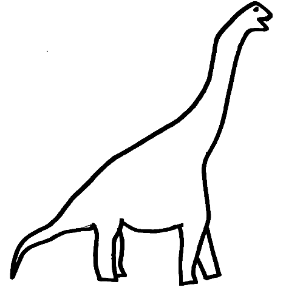
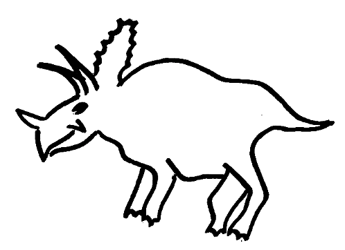

Much of the information listed in this document comes from the popular editable information site, Wikipedia. Because Wikipedia can be edited by anyone, we can assume that the information on there is correct because who would update the specified pages except for a paleontologist specializing in prehistoric animals?
While we don’t know why dinosaurs no longer roam the earth, many theories exist:
I often wonder if different species of dinosaurs would have been friends with each other, i.e. Brontosaurus and Apatosauru
Note: this zine does not answer the question: what did the Tyrannosaurus rex do with its arms? Please send me your theories.
Note 2: I have never seen a live dinosaur, which is why these illustrations are kind of silly and may not represent exactly what a dinosaur looks like.
The Giraffatitan is from the late Jurassic period and is a genus of sauropod dinosaur. It was originally thought to be the largest dinosaur, at about 39 feet tall and 73 feet in length, but the discovery of the giant titanosaurians are larger than this longneck boi. They’re big bois, though, and are estimated to have weighed between 15 and 78 tonnes. One tonne is 1.10231 short tons, which is an American ton. The True American Ton.

Though not the biggest dinosaur, the Giraffatitan was the largest brachiosaurid sauropod. It was a vegetarian, which is why its neck was so long (please note that its vegetarianism did not contribute to why its brain was so smol). It had four leggies, two of which were long forelimbs – it walked on all four leggies.
This type of sauropod had nostrils (like other sauropods) near their snouts (unlike other sauropods, which had them on the top of their heads?). The Giraffatitan did not have a trunk, but there have been hypotheses that it did have one. Previously, it had been hypothesized that the dinosaur used its trunk like a snorkel!! The theory was that the Giraffatitan would be submerged in water to support its big boi status, but recent studies demonstrate that water pressure would have prevented the chonky from breathing properly, and it’s smol feet couldn’t help it do any swimming.
The Giraffatitan was first discovered in Tanzania (or German East Africa, as it was colonially known in 1907).
The Dryosaurus (which means tree lizard, not dry dinosaur as I originally thought) was a genus of ornithopod dinosaur from the late Jurassic period in America. The True American Dinosaur. (Kidding, so many dinosaurs were found in America. Tonnes Tons of Dinosaurs.)

These dinos were between 8 and 14 feet, and only weighed up to 200 pounds, so kind of smol – bigger than the lizards we are familiar with today, but approximately human-sized. Dryosaurs: they’re just like us!
Something weird, though, not enough adult bones of this dinosaur have been found so we have NO idea how big exactly they got! The most complete dryosaur skeleton that was found was of a bb dino. I wonder why we only have baby Dryosaur bones, when generally we only find adult bones due to bb bones being so fragile? What killed them before they became adults? Maybe they just had a tiny lifespan? These dinos had a long neck (kind of), slim legs, and a thicc, stiff tail. But they had the quintessential tiny dinosaur arms, and five fingers on each hand, as you can clearly see in the illustration. What could they possibly use their arms for? I don’t think they could even put their arms together to clap, let alone hold objects or bring food to their mouths.
Dryosauruses (Dryosauri?) had “cheek teeth”, which are not, as I had originally thought, teeth instead of cheeks. They’re simply post-canines – post-canines are molars and premolars. Dinosaurs: they’re just like us!
Dryosauruses were discovered in Wyoming – the true American state. They ate low growing vegetation in ancient floodplains. Because they were so smol, they probably were a snack to larger dinos, but they could run away from predators pretty quickly. But since we apparently don’t know how big the adults were, it’s likely that they were bigger than the kids. Maybe their tiny arms were just used to smack other dinosaurs in the face.
The Utahraptor was very cleverly named due to the location that it was found (Utah). It means “Utah’s predator”. It’s a genus of dramasaurus dromaesosaurid theropod dinosaurs from the Early Cretaceous period. It walked around on 2 legs, and based on its build, it’s honestly shocking that Utah’s basketball team was named the Jazz instead of the Raptors (the Raptors are in Toronto).

So from my research, it looks like Utahraptors had two legs, two short arms, and weird feathery things on its arms. It’s speculated that these dinosaurs had feathers for wing-assisted incline running, meaning they’d flappy flap their wings while running to allow it to run up trees vertically. Maybe they lived in little dino treehouses part of the time.
There is only one known species of the Utahraptor, the Utahraptor ostrommaysi. Originally, it was going to be named after the Utahraptor spielbergi because Steven Spielberg donated a bunch of money for paleontological research, but no agreement was reached on how much it costs to have a dinosaur named after you!?
It’s speculated that the Utahraptor ate already dead animals OR animals caught in quicksand. Sometimes, the Utahraptor would be caught in the quicksand when trying to eat these animals. A predator trap! What if...each Utahraptor was sucked in trying to save the previous Utahraptor that was drowning in the quicksand...and that’s how this particular species/genus murdered itself in its entirety. We’ll never know unless Steven Spielberg donates more money to research this.
Interestingly, the Utahraptor is not the state fossil of Utah, the Allosaurus fossil is. But the Utahraptor holds another distinction: it is the state dinosaur of Utah, an honor bestowed upon it posthumously in 2018. In case you are wondering, there are only a few states that currently have state dinosaurs. The District of Columbia also has a state dinosaur, but no Senate representation.
The Quetzalcoatlus is a pterosaur from the Late Cretaceous epoch. Technically, it is not a dinosaur, but is instead is considered a prehistoric animal. This animal FLEW and is one of the largest known flying animals ever. But not a dinosaur.

It was named after the Mesoamerican feathered serpent god, Quetzalcoatl, the god of Wind and Wisdom. As far as we know, the Quetzalcoatlus was not worshipped. Why was it named Quetzalcoatlus when it was discovered in Texas? Who knows, but its wingspan is where Texas gets the slogan, “Everything’s bigger in Texas”. One of the known species of the Quetzalcoatlus is the Quetzalcoatlus northropi, named after John Knudsen Northrop – he designed planes that looked exactly like similar to the Quetzalcoatlus. Northrop would later merge with Grumman to cleverly become Northrop Grumman, a defense and weapons manufacturer.
These diNOTsaurs had a wingspan as large as 52 feet, and can be considered “long bois”. Generally, it’s estimated that its average wingspan was approximately 36 feet, and that its weight could be around 500 lbs (so still kind of smol, like 2000 bananas). Dinosaur size estimates vary so much and everything is so approximate that originally, the Quetzalcoatlus was estimated to be only 150 lbs. This pterosaur also had a sharp and pointy beak, some say, while others say that it had a blunt snout. Honestly, these are opposite mouthfeels? Do we know anything about prehistoric animals?
Since its discovery, the Quetzalcoatlus has thought to have had the following feeding patterns:
However, the current theory is that it used terrestrial stalking, meaning they would stalk creatures to eat on foot. This is strange because they were able to fly.
There's nothing in the research that indicates that the Quetzalcoatlus didn't have magical powers.
The Ankylosaurus is a genus of armored dinosaur that lived near the end of the Cretaceous period. Ankylosaurus means “fused lizard”, and the only known species is the Ankylosaurus magniventris. Magniventris means “great belly”. Fused Lizard, Great Belly. God, what?

The Ankylosaurus walked around on all four of its legs, and was estimated to have been between 20 and 26 feet long. It had horns going backwards, horns going backwards and down, and two nostrils that faced sideways. It also had armor plates (basically really thick bony scales), bony half-rings on its neck, and a large club tail. The Tail Club. I bet if you ground up these armored scales, you could make a Tums. We don’t know exactly why they had tail clubs; it’s never been confirmed if it was used to destroy other living things or to defend itself. It also could have been formed to make other animals think that the tail club is actually the head: trickery.
The way that the Ankylosaurus ate is called “non-selective browsing”, meaning that it ate leaves, soft shoots, or fruits of high-growing, generally woody plants such as shrubs. It’s called a browser!
It moved very slowly, not unlike a very large, less slimy snail; it is believed that it could move quickly if it had to. Dinosaurs: they’re just like me!
The ankylosaurus was discovered in the Hell Creek formation in Montana. It likely had armor because it had to protecc itself from the demons that resided in Hell Creek. No angels over here!
Besides its weird armor, it’s not very interesting. It ate 60 lbs of ferns a day, and maybe some fruit, which looked really different prehistorically. Modern fruit is different than the Ankylosaurus ate, due to selective breeding. It’d be interesting if humans decided to implement a diet called the Creta diet, like Paleo, except we’d just eat what the Ankylosaurus ate. We’d live as long as the dinosaurs!
The Brachiosaurus was a genus of sauropod, and its name means “arm lizard” (what?). Arm lizard. He was a necky boi, not unlike its friend (but not brother) the giraffatitan, and was a high browser, meaning it used its neck to eat vegetation that grew as high as 9 meters.

It probably walked around on all four of its leggies at all times, since its structure indicated that it was unable to hang out on its hind legs (which is a different behavior than other sauropods). I guess the “arm lizard” thing comes up because its forelimbs (arms) are longer than its hindlimbs (legs). Early on, there was debate that it lived partially in water, due to its size and stature, but more recently, due to the shortness of its zygapophyses (the part of the vertebra responsible for fitting with other parts of the vertebra) resulting in stiffness of its torso. This discovery made it widely accepted that most sauropods were terrestrial. There’s no evidence that says Brachiosauruses didn’t love to take baths!
Recent research on the Brachiosaurus indicates that it was warm-blooded, but it was originally believed to be ectothermic. In case this is your first time hearing the word “ectothermic”, it means that the organism’s internal processes do little to regulate its temperature, and it’s instead controlled by the environment its in. For example, I need to get a warming rock to lay on at my office because it’s freezing in there and I can’t stay warm, and believe me, I need to be warm.
The Brachiosaurus is famous for being a key player in Jurassic Park, do DO, do DO, do do DO do do do DO. It did actually live in the Jurassic period, unlike most of the other dinos that are featured in the movie; Jurassic Park sounds more fun than Cretaceous Park. Did you know the Tyrannosaurus had hollow bones? Just like birds! Anyway, this section is not about Jurassic Park, but the Tyrannosaurus definitely had feathers.
The Pentacertops was a herbivore ceratopsid dinosaur from the late Cretaceous Period. It had five horns on its face, which is what Pentaceratops means. It’s very horny, much hornier than a Triceratops, which only had three horns. Loves 2 Bone. The Pentaceratops also had a frill on its skull, I don’t know why. Maybe for parties? To appear threatening? Or, more likely, to protect the rest of its body from harm that came from the front.

Anyway, a specimen of the Pentaceratops won the Biggest Skull of a Land Vertebrate Award. But this distinction was later taken away, since it was discovered that the skull was related to, but not the Pentaceratops; the skull actually belonged to the Titanoceratops. This was a huge blow to the Pentaceratops community whose only other distinction thus far had been Horniest Frilliest Dinosaur.
It’s estimated that the Pentaceratops was about 20 feet long, and weighed five tonnes! As a reminder, one tonne is 1.10231 short tons (American ton). This dino’s remains have been found mostly in New Mexico, where it ate the Cretaceous plants of the time: ferns, cycads, and conifers.
(A quick aside: ceratopsids were GIANT herbivores. I’m struggling to understand how plant-eaters could get so giant. JUST SO MANY LBS, how many leaves per meal had to be eaten to get there? An entire tree, chopped up and sautéed in garlic in oil like it’s broccoli? Heads of cabbage, but prepared like Brussels sprouts? A fern salad? Whole peppercorns? It’s hard to become swol as a vegetarian? The Creta diet.)
The Pentaceratops did not live alone – here is a smattering of other dinosaur friends that shared its habitat: